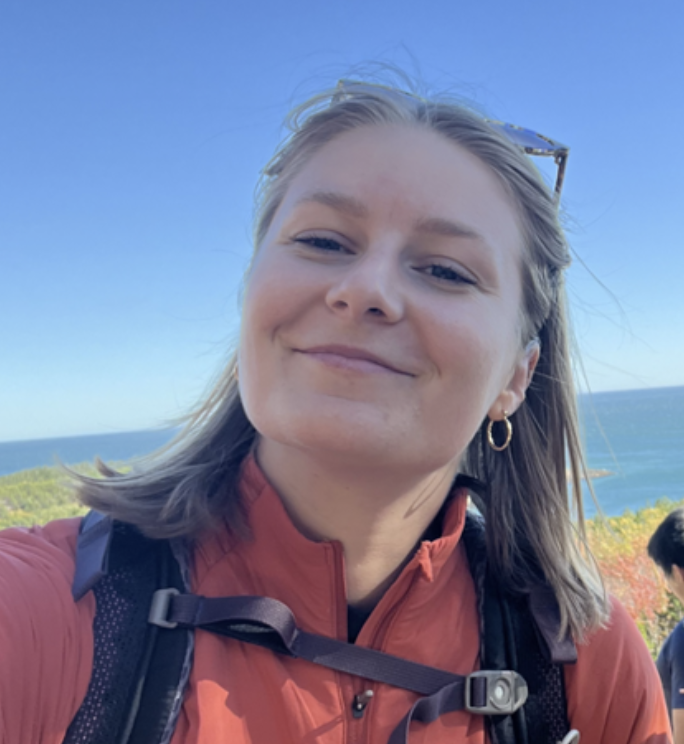
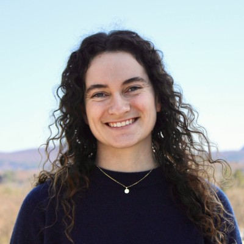
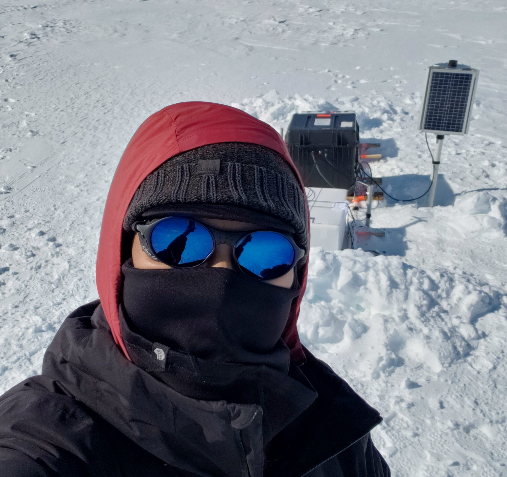
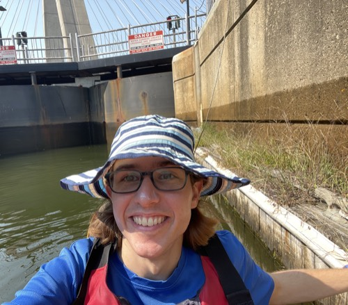

Research
We seek to understand connections between various components of the Earth system, their response to climate change, and human impact on the environment. Our research is organized around five questions.










What controls glacier sliding?
Mechanics of deformable glacier beds, basal hydrology, and the coupling between ice flow and bed deformation.
How does ice deform?
Ice rheology in shear margins, the role of damage, heating, melting, and crystallographic fabric development.
Why does ice fracture?
Fracture mechanics, rift propagation, and calving in ice shelves and their implications for ice sheet mass loss.
Can we stabilize ice sheets?
Exploring whether targeted interventions can slow glacier retreat and reduce the risk of rapid sea-level rise.
How else can the tools of science serve people?
Remote sensing for environmental hazard response, including marine oil spills, wildfires, and beyond.